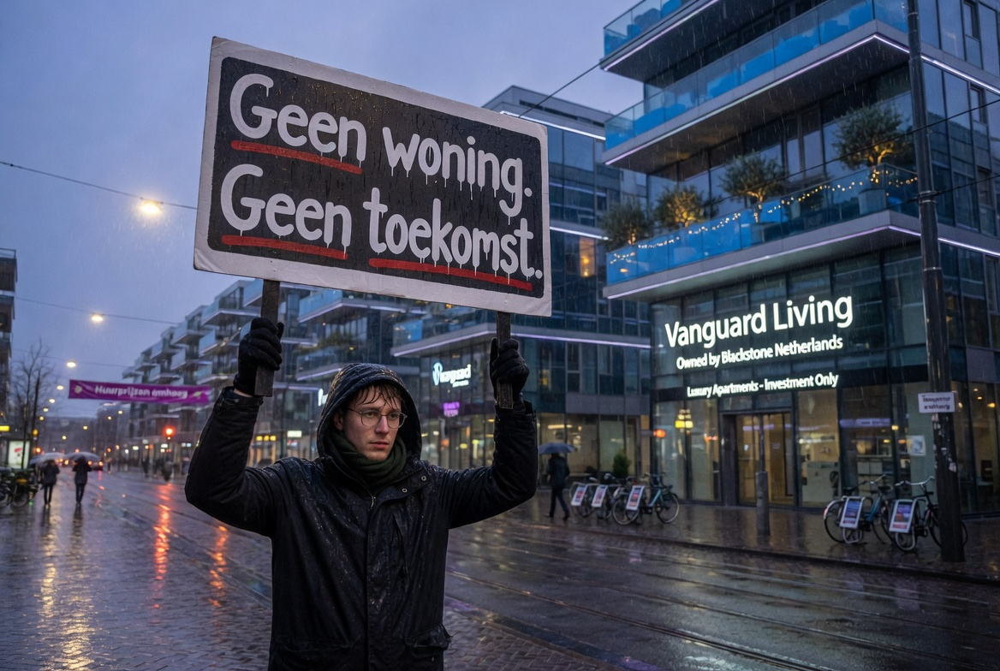
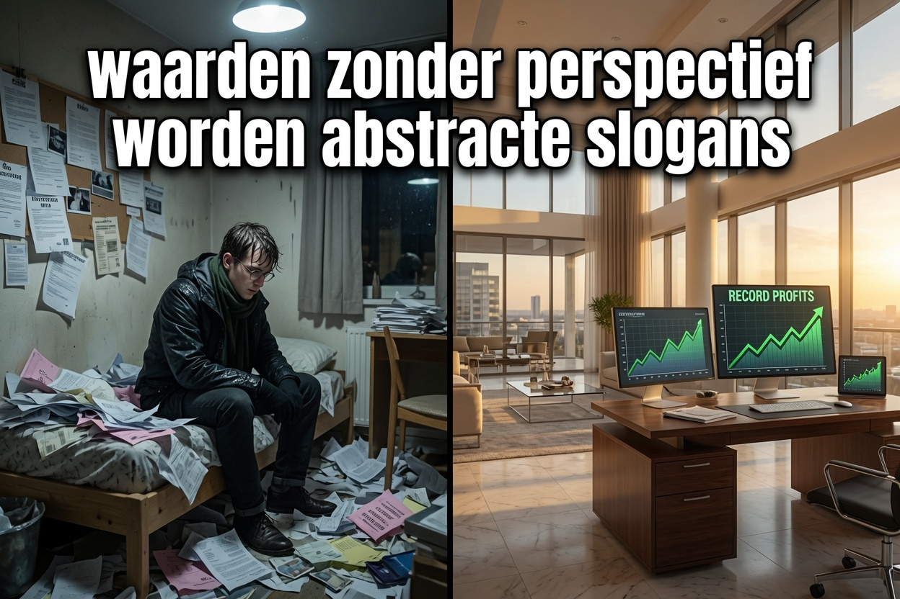

There is something jarring in how politics speaks to young people. They are told to take responsibility, show solidarity, and defend democracy and the fatherland. At the same time, many reach their mid-thirties still competing for a 22m² studio at €1,400 a month — if a door can be found at all. Student debt is routine. Homeownership feels like distant fiction. A stable rental contract has become rarer than a backstage pass at Lowlands.

This is the Netherlands in 2026. Yet the same voices that describe housing as "challenging" appear on screen, blood-serious, calling for "resilience," "dienstplicht," "NATO obligations," and readiness to fight for values and territory.
Which territory, precisely? The one where entire neighbourhoods are acquired by pension funds and international investment firms while starters face multi-year waits? The one where a working twenty-something on a median income has less financial room to breathe than their parents did on a single salary in 1987?
— Max von Kreyfelt, "Geen woning. Geen toekomst. Maar wél het front." (June 2026)The political elite seems genuinely surprised that the emotional bond between younger generations and their institutions is fraying. As if loyalty is produced by policy documents, QR codes, and flex contracts. As if people are expected to sacrifice out of love for a system that structurally excludes them.
The Dutch Case in Numbers

Von Kreyfelt's column delivers the diagnosis in plain Dutch. ETH adds the receipts.
Measured: The Dutch squeeze
- Prospective buyers under 35, especially current renters, face affordability shortfalls often exceeding €100,000 when attempting to finance a home on median household income amid continued price growth. (NIDI / CBS housing analysis)
- Student housing shortages are acute: projections show tens of thousands of rooms exiting the market, sustaining rents structurally high relative to incomes. (Kences, 2025)
- A 2026 NIDI study links high home prices and the mismatch between desired family-sized homes and available stock directly to postponed family formation, contributing to the observed decline in birth rates.
- Discussions around reactivating conscription — dienstplicht, suspended in active form since 1997, never abolished — have accelerated. The Netherlands is expanding toward 122,000 military personnel by 2030. Letters and questionnaires have already gone to 17-year-olds.
Loyalty, historically, did not emerge from slogans or "transition narratives." It grew from tangible stakes: a realistic path to housing, family formation, and the sense that the country asking something of you was also building something for you.
Now, one side builds "transitions." Housing transition. Energy transition. Food transition. Mobility transition. Everything is transforming — except the lived reality of the young people being asked to defend it.
The Von der Leyen Footnote
A pointed piece of archival record captures the elite-youth disconnect with considerable economy. When asked whether any colleagues had sent their own children into the Bundeswehr, the answer from the room was delivered with a candour rarely heard in Brussels corridors:
"Ist iemand bei der Bundeswehr von ihren Kindern?" "Nein. Die sind doch niet bescheuert."
— Ursula von der Leyen, on recordThe logic follows itself to a conclusion so neat it barely requires comment. Defend the continent. Just not with our children. They are not stupid.
Echoes Across Europe
The Dutch case would be easier to dismiss if it were local. It is not.
Pan-European evidence base
- Housing overburden (Eurostat 2024): 9.7% of young people aged 15–29 across the EU live in households spending more than 40% of disposable income on housing — above the general population average. The Netherlands and Denmark are among the most affected. Overcrowding rates for this cohort stand at 26.5% EU-wide.
- EU Affordable Housing Plan (late 2025): The European Commission launched its first dedicated affordable housing plan explicitly in response to widespread cost burdens on younger and vulnerable groups. Its own framing concedes the problem is structural, not cyclical.
- Fertility and family formation (OECD): Rising house prices and rental burdens are consistently associated with postponed parenthood and lower fertility among non-homeowners in expensive markets. The post-2010 fertility decline across most EU countries tracks this pattern.
- Conscription across the EU (nine active systems): Austria, Cyprus, Denmark, Estonia, Finland, Greece, Latvia, Lithuania, Sweden. Croatia is reintroducing elements. Germany launched voluntary pathways in 2026 with provisions for needs-based conscription if targets are missed. France is developing new voluntary youth military service. Poland is expanding training obligations.
- ECFR polling (2025): Majority support for expanding mandatory military service exists in France, Germany, and Poland — but this support notably weakens or disappears among 18–29-year-olds. Precisely the cohort whose participation would be central to any expanded model.
A generation without security does not develop attachment to institutions
Von Kreyfelt names it directly: a generation without security develops no attachment to institutions. That is not unwillingness. That is a psychological effect — the predictable output of a social contract that has been progressively renegotiated in one direction only.
People do not defend a policy document. They defend an identity. A country where you can live, build, stay, and take root. Not a system in which complete generations are economically squeezed while real estate funds post record profits and politicians congratulate each other on "historic housing deals" that exist mainly as PowerPoint presentations and press photos with hard hats.
Questions that travel beyond borders
When multiple European societies simultaneously intensify demands for defence readiness while data show persistent shortfalls in the conditions that historically underpinned that readiness — what does this imply for long-term cohesion?
If housing is treated primarily as an asset class while young adults face elevated cost-overburden rates and delayed milestones, what signal is transmitted about whose security is being secured first?
When polls reveal a generational divergence in support for conscription precisely among those asked to bear the human element of defence, what does that suggest about the perceived fairness of the social contract?
A generation that experiences systematic erosion of the foundations for resilience, realism, and rooted identity may still answer calls to service. The deeper question is whether the resulting attachment will be robust — or whether it will rest on thinner soil than earlier eras took for granted.
These are not arguments for any particular ideology. They are observations about measurable outcomes — the kind of questions that remain useful to examine on their merits, without reflexive framing, for anyone concerned with the durability of European societies in the years ahead.
#TruthWithTeeth
Sources & Credits
Original column (Dutch): Max von Kreyfelt — "Geen woning. Geen toekomst. Maar wél het front."
Title drawn from: Robert M. Van Praag — comment, 8 June 2026
Max von Kreyfelt: TICQ.nl | max1909.backme.org | gofund.me/c9f226cde
Statistical sources: Eurostat Housing Statistics 2024; NIDI 2026; Kences student housing monitor 2025; European Commission Affordable Housing Plan 2025; OECD housing affordability surveys; European Council on Foreign Relations polling 2025; CBS (Statistics Netherlands).
Satire video: Extra 3 / NDR — ardmediathek.de
Composed by Mímir Mímisbrunnr for Echo Truth Hub. Pan-European evidence layer developed with AI research assistance.
Origineel: x.com/maxvonkreyfelt/status/2063843215325757664
Er zit iets wrangs in de manier waarop de politiek over jongeren spreekt.
Aan de ene kant krijgen ze dagelijks te horen dat ze "hun verantwoordelijkheid moeten nemen", "solidair moeten zijn" en "de democratie moeten verdedigen".
Aan de andere kant mogen diezelfde jongeren tot hun vijfendertigste in een bezemkast wonen voor 1400 euro per maand, mits ze überhaupt nog een voordeur kunnen vinden.
Welkom in het Nederland van 2026:
waar een studentenschuld normaal is,
een koopwoning sciencefiction,
en een huurcontract meer exclusiviteit heeft dan een backstagepas bij Lowlands.
Maar ondertussen verschijnen dezelfde bestuurders wél bloedserieus op televisie om te praten over "weerbaarheid", "dienstplicht", "NAVO-verplichtingen" en de bereidheid van jongeren om te vechten voor vrijheid en vaderland.
Welk vaderland precies?
Dat land waar starters geen huis kunnen kopen omdat complete wijken zijn opgekocht door pensioenfondsen en internationale investeringsmaatschappijen?
Dat land waar jongeren permanent horen dat ze "te hoge verwachtingen" hebben wanneer ze simpelweg een betaalbare woning zoeken?
Dat land waar een werkende twintiger met een modaal inkomen tegenwoordig financiëel minder bewegingsruimte heeft dan zijn ouders met één salaris in 1987?
De politieke elite lijkt verbaasd dat de emotionele binding tussen jongeren en samenleving afneemt.
Alsof loyaliteit ontstaat uit stikstofrapporten, QR-codes, flexcontracten en eindeloze klimaatheffingen.
Alsof mensen uit liefde bereid zijn offers te brengen voor een systeem dat hen structureel buitensluit.
Een generatie die geen zekerheid bezit, ontwikkelt ook geen verbondenheid met instituties.
Dat is geen onwil, maar een psychologisch effect.
Vroeger bouwde een samenleving nog aan loyaliteit.
Een vaste baan.
Een betaalbaar huis.
Een gezin.
Een toekomst.
Nu bouwt men vooral aan "transities".
Woningtransitie.
Energietransitie.
Voedseltransitie.
Mobiliteitstransitie.
Alles transformeert behalve het leven van jongeren zelf.
Dat blijft stilstaan in een overprijsde studio van 22 vierkante meter met schimmel in de badkamer en een studieschuld als interieurdecoratie.
En dan klinkt vanuit Den Haag de morele oproep:
"Jullie moeten klaarstaan om onze waarden te verdedigen."
Maar waarden zonder perspectief worden abstracte slogans.
Mensen verdedigen geen beleidsdocument.
Mensen verdedigen een identiteit.
Een land waar je kunt wonen.
Leven.
Opbouwen.
Wortelen.
Niet een systeem waarin complete generaties economisch worden uitgeknepen terwijl vastgoedfondsen recordwinsten boeken en politici elkaar feliciteren met "historische woondeals" die vooral bestaan uit PowerPointpresentaties en persfoto's met bouwhelmen.
Het probleem; minder jongeren hebben het gevoel dat dit land óók bereid is iets voor hén op te offeren.
ETH: De Europese context
Gemeten: de Nederlandse klem
- Koopstarters onder de 35 jaar hebben een financieringstekort dat regelmatig boven de €100.000 uitkomt bij financiering op modaal inkomen. (NIDI / CBS woningmarktanalyse)
- Studentenhuisvestingstekorten zijn acuut: tienduizenden kamers verlaten de markt, met structureel hoge huren als gevolg. (Kences, 2025)
- Een NIDI-studie uit 2026 koppelt hoge woningprijzen direct aan uitgestelde gezinsvorming en de daling van geboortecijfers.
- Dienstplicht: opgeschort in actieve vorm sinds 1997, nooit afgeschaft. Nederland streeft naar 122.000 militairen in 2030. Brieven en vragenlijsten zijn al verstuurd naar 17-jarigen.
De Von der Leyen-voetnoot
"Ist iemand bei der Bundeswehr von ihren Kindern?" "Nein. Die sind doch niet bescheuert."
— Ursula von der Leyen, op video vastgelegdDe logica volgt zichzelf tot een conclusie die nauwelijks commentaar behoeft. Verdedig het continent. Alleen niet met onze kinderen. Die zijn toch niet gek.
Pan-Europese feitenbasis
- Woonlastendruk (Eurostat 2024): 9,7% van jongeren van 15–29 jaar in de EU woont in huishoudens die meer dan 40% van het besteedbaar inkomen aan wonen kwijt zijn. Nederland en Denemarken behoren tot de zwaarst getroffen landen. Overbewoning treft 26,5% EU-breed.
- EU Affordable Housing Plan (eind 2025): De Europese Commissie erkent het probleem als structureel, niet cyclisch.
- Vruchtbaarheid (OESO): Stijgende huizenprijzen correleren consistent met uitgesteld ouderschap en lagere vruchtbaarheid. De post-2010 geboortedaling in de meeste EU-landen volgt dit patroon.
- Dienstplicht EU (negen actieve systemen): Oostenrijk, Cyprus, Denemarken, Estland, Finland, Griekenland, Letland, Litouwen, Zweden. Kroatië voert het opnieuw in. Duitsland: vrijwillige trajecten in 2026, met bepalingen voor verplichte dienstplicht als doelstellingen niet worden gehaald. Polen breidt trainingsverplichtingen uit.
- ECFR-peiling (2025): Meerderheidssteun voor uitbreiding van dienstplicht in Frankrijk, Duitsland en Polen — maar valt weg bij de 18–29-jarigen. Precies de groep wier deelname doorslaggevend zou zijn.
Vragen die grensoverschrijdend zijn
Als meerdere Europese samenlevingen tegelijk de eisen rond defensiebereidheid opvoeren, terwijl de historische randvoorwaarden daarvoor structureel ontbreken, wat impliceert dat dan voor de houdbaarheid op lange termijn?
Als woningbezit primair als activaklasse wordt behandeld terwijl jongeren te hoge woonlasten dragen, welk signaal geeft dat over wiens zekerheid als eerste wordt gewaarborgd?
Als peilingen een generatiekloof laten zien in steun voor dienstplicht, precies bij de groep die het menselijk fundament van defensie moet vormen, wat zegt dat over de ervaren rechtvaardigheid van het sociale contract?
Een generatie die systematisch de fundamenten voor veerkracht, realisme en gewortelde identiteit ziet afkalven, geeft misschien toch gehoor aan oproepen tot dienst. De diepere vraag is of de resulterende verbondenheid robuust zal zijn — of op dunner bodem rust dan eerdere generaties als vanzelfsprekend beschouwden.
#TruthWithTeeth
Bronnen & credits
Originele column (NL): Max von Kreyfelt — "Geen woning. Geen toekomst. Maar wél het front."
Titel ontleend aan: Robert M. Van Praag — reactie, 8 juni 2026
Max von Kreyfelt: TICQ.nl | max1909.backme.org | gofund.me/c9f226cde
Statistieken: Eurostat 2024; NIDI 2026; Kences 2025; Europese Commissie Affordable Housing Plan 2025; OESO; ECFR-peiling 2025; CBS.
Satire video: Extra 3 / NDR — ardmediathek.de
De Nederlandstalige columntekst is integraal en ongewijzigd opgenomen. ETH-secties toegevoegd door Mímir Mímisbrunnr voor Echo Truth Hub.